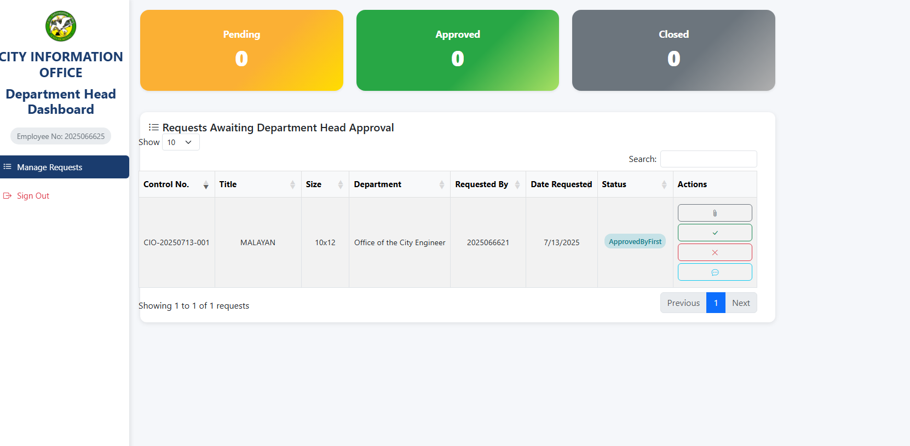

1. Overview of the Practicum Engagement
Biñan City Hall serves as the central administrative office of the City Government of Biñan, located in the province of Laguna, Philippines. It provides a wide range of services including infrastructure development, health and social welfare, disaster preparedness, and public information dissemination. Among its key departments is the City Information Office (CIO), which is primarily responsible for managing and distributing official information to the public. This includes overseeing media content, announcements, and printed materials such as tarpaulins used for city events and government initiatives.
For this practicum engagement, I was assigned to the City Information Office and was part of a group of three members tasked with improving the existing workflow for tarpaulin printing requests. The current process previously managed manually often led to inefficiencies and lacked proper tracking and accountability. Our group was assigned to assist in the design and development of an automated Tarpaulin Ticketing System, which aims to streamline the request process, improve coordination between departments, and ensure proper documentation of all printing requests.
The system was developed using CodeIgniter 4 as the backend framework and MySQL as the database management system. My primary responsibilities focused on backend validation and user interface (UI) implementation, ensuring that user inputs were correctly processed and that the system provided a clean and user-friendly experience. These tasks were critical to maintaining data accuracy and overall system usability.
My practicum rendered a total of 384 hours, starting from April 22, 2025, and is expected to be completed by July 28, 2025. This hands-on experience allowed me to apply academic knowledge in a real-world setting, enhance my programming and problem-solving skills, and contribute to a functional system that will benefit the operations of Biñan City Hall.
2. Presentation of Output
Below are screenshots of the modules developed for the Tarpaulin Ticketing System, organized by user roles and functionality.
User Module Screenshots
Admin Module Screenshots
Department Head Module Screenshots

Department Head Dashboard
Printer Module Screenshots
Detailed Discussion of Tasks and Assignments
The Tarpaulin Ticketing System was developed as a comprehensive web application to streamline the tarpaulin printing request process at Biñan City Hall. The system consists of four main user roles, each with specific responsibilities and interfaces:
User Module Responsibilities:
- Authentication: Secure login system with role-based access control
- Request Management: Create, view, and track tarpaulin printing requests
- Communication: Chat functionality for discussing request details with administrators
- Request Closure: Ability to close completed requests and provide ratings
Admin Module Responsibilities:
- System Oversight: Comprehensive dashboard showing all system activities
- Request Approval/Rejection: Review and approve or reject user requests with detailed feedback
- Attachment Management: View and manage uploaded request attachments
- Activity Logging: Maintain detailed logs of all system activities for audit purposes
Department Head Module Responsibilities:
- Department Management: Oversee requests specific to their department
- Approval Workflow: Review and approve requests within their department scope
- Rejection Management: Provide detailed feedback when rejecting requests
Printer Module Responsibilities:
- Print Job Management: View and manage assigned printing tasks
- Communication: Coordinate with users and administrators regarding print specifications
- Job Completion: Mark jobs as completed and track pickup status
The system was developed using CodeIgniter 4 framework with MySQL database, implementing responsive design principles and ensuring cross-browser compatibility. The backend validation ensures data integrity while the user interface provides an intuitive experience for all user roles.
3. Synthesis of the Practicum Engagement
During my practicum at the City Information Office of Biñan, I gained a variety of valuable skills that contributed significantly to both my personal and professional development. One of the most important was enhancing my technical skills, particularly in backend development and user interface design using CodeIgniter 4 and MySQL. Working on a real-world system helped me better understand the importance of data validation, system logic, and responsive design.
In addition to technical growth, I also developed teamwork and collaboration skills, as I worked closely with two other group members throughout the project. We regularly coordinated tasks, resolved issues together, and supported one another in meeting our goals. This collaboration taught me how to communicate effectively and share responsibilities in a team environment.
Moreover, I improved my time management by balancing deadlines, organizing development phases, and adjusting to the work culture of a government office. This helped me become more disciplined and focused in handling project timelines and deliverables.
Overall, these skills have equipped me with a stronger foundation for my future career in the tech industry.